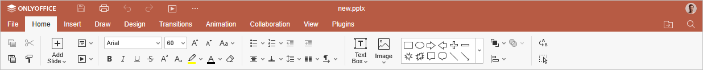
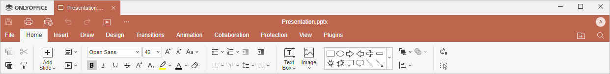

Kartica Početna
Kartica Početna u Presentation Editor-u se podrazumevano otvara prilikom otvaranja prezentacije. Omogućava podešavanje opštih parametara slajdova, formatiranje teksta, umetanje određenih objekata, kao i njihovo poravnanje i raspoređivanje.
Odgovarajući prozor Online Presentation Editor-a:

Odgovarajući prozor Desktop Presentation Editor-a:

Korišćenjem ove kartice možete:
- upravljati slajdovima i pokrenuti projekciju slajdova,
- formatirati tekst unutar tekstualnog okvira i omogućiti podršku za pisanje s desna na levo,
- umetati tekstualne okvire, slike, oblike,
- poravnavati i raspoređivati objekte na slajdu,
- koristiti Boolean operacije,
- kopirati/ukloniti formatiranje teksta.